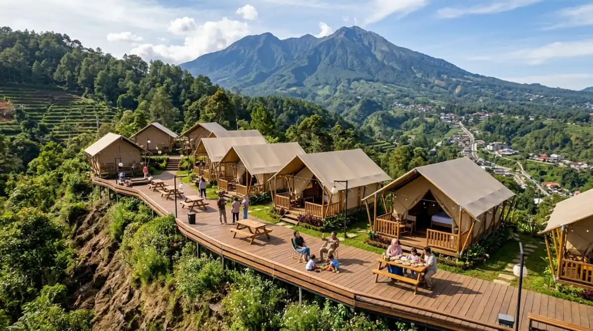

Camping Lebaran di Batu, alternatif liburan anti-mainstream bersama keluarga tercinta.
Camping Lebaran di Batu, alternatif liburan anti-mainstream bersama keluarga tercinta.
- Keluar dari Jebakan Rutinitas Lebaran yang Monoton
- Mengapa Memilih Camping Lebaran di Batu?
- Udara Sejuk Sebagai Penawar Stres Kerja
- Quality Time Tanpa Distraksi Gadget
- Liburan Anti-Mainstream yang Gak Bikin Pusing
- Kemah Mewah Tanpa Perlu Bawa Tenda Sendiri
- Momen Lebaran Estetik Bersama Keluarga
- Persiapan Sederhana Sebelum Berangkat Kemah
- Pilih Provider Camping yang Terpercaya
- Pakaian Hangat Itu Wajib
- Merayakan Idul Fitri dengan Cara Baru
- FAQ
Pernah nggak sih kamu merasa libur panjang Lebaran habis begitu saja tanpa kenangan yang benar-benar berkesan? Biasanya, siklusnya selalu sama: bermacet-macetan di jalan tol, keliling silaturahmi sampai kelelahan, lalu tiba-tiba besoknya sudah harus kembali berhadapan dengan tumpukan email pekerjaan.
Padahal, momen Idul Fitri adalah waktu emas untuk quality time sungguhan bersama orang-orang tersayang. Kalau tahun ini kamu mengulangi rutinitas yang sama, besar kemungkinan kamu akan menyesal saat liburan usai karena merasa kurang istirahat.
Daripada menghabiskan sisa cuti dengan rebahan sambil memandangi layar gadget karena kehabisan ide, kenapa nggak mencoba camping Lebaran di Batu? Udara yang sejuk, pemandangan hijau yang bikin mata rileks, serta kehangatan api unggun bisa jadi penawar jitu dari penatnya rutinitas. Yuk, kita obrolin kenapa alternatif liburan anti-mainstream ini wajib banget masuk pertimbanganmu tahun ini, sebelum momen liburannya terlewat sia-sia!
Keluar dari Jebakan Rutinitas Lebaran yang Monoton
Coba ingat-ingat lagi, bagaimana pola liburan Lebaranmu tahun lalu? Jujur saja, bagi kebanyakan dari kita, libur panjang ini sering kali terasa seperti pindah tempat kerja saja. Bedanya, kalau di kantor kita meeting dari satu divisi ke divisi lain, pas Lebaran kita "meeting" dari satu rumah kerabat ke rumah kerabat lainnya.
Belum lagi drama kemacetan yang bikin mood gampang berantakan. Sesampainya di rumah, badan rasanya remuk, dan waktu untuk benar-benar ngobrol intim dengan pasangan atau anak-anak malah terlewatkan begitu saja.
Analogi sederhananya begini: bayangkan kamu sedang lari maraton setiap hari di dunia kerja, lalu saat dikasih waktu istirahat (libur Lebaran), kamu malah disuruh ikut lomba lari estafet. Wajar dong kalau capeknya dobel? Nah, di sinilah pentingnya kita sedikit egois demi kewarasan dan kebahagiaan keluarga kecil kita. Mencari alternatif liburan yang menyatu dengan alam bisa jadi "tombol reset" terbaik. Dan bicara soal alam terbuka yang ramah keluarga, Kota Batu di Jawa Timur adalah jawaranya.
Mengapa Memilih Camping Lebaran di Batu?
Kalau kamu bertanya-tanya, dari sekian banyak tempat, kenapa harus Kota Batu? Jawabannya sederhana. Kota ini punya kombinasi ajaib antara infrastruktur pariwisata yang sudah sangat matang dan kondisi alam yang masih asri.
Sebagai orang yang pernah merasakan penatnya burnout pekerjaan, aku sangat paham bahwa kita butuh lingkungan yang kontras dengan suasana kantor atau padatnya kota. Batu menawarkan topografi dataran tinggi dengan udara dingin yang menembus pori-pori. Rata-rata suhunya berkisar antara 18 hingga 22 derajat Celsius, sangat nyaman untuk mendinginkan kepala.
Udara Sejuk Sebagai Penawar Stres Kerja
Berada di alam terbuka Kota Batu ibarat menghirup oksigen murni setelah berbulan-bulan paru-parumu cuma diisi oleh udara AC kantor dan polusi jalanan. Aroma khas embun pagi yang bercampur dengan wangi daun pinus punya efek terapeutik yang luar biasa.
Menurut banyak penelitian, berada di alam selama beberapa hari terbukti ampuh menurunkan kadar hormon kortisol alias hormon stres. Jadi, camping Lebaran di Batu bukan sekadar liburan buat gaya-gayaan, tapi memang investasi untuk kesehatan mentalmu dan keluargamu.

Suasana hangat bersama keluarga dan kerabat saat menikmati camping di momen Lebaran.Quality Time Tanpa Distraksi Gadget
Ini dia penyakit keluarga modern zaman now. Kumpul satu meja, tapi matanya fokus ke smartphone masing-masing. Nah, saat kamu memutuskan untuk berkemah, alam secara otomatis "memaksa" kamu untuk berinteraksi.
Ketika sinyal internet mungkin nggak sekuat di kota, kamu dan anak-anak atau pasangan akan mulai melakukan hal-hal sederhana bersama. Mulai dari menikmati secangkir teh hangat di depan tenda sambil memandang Gunung Panderman, sampai main tebak-tebakan kata di bawah taburan bintang. Interaksi murni seperti ini sulit banget didapatkan kalau kamu cuma menginap di hotel di tengah kota.
Liburan Anti-Mainstream yang Gak Bikin Pusing
Mungkin di kepalamu sekarang muncul keraguan. "Duh, mau camping Lebaran di Batu kok rasanya ribet ya. Masa lagi capek-capeknya liburan malah disuruh bawa tenda, matras, belum lagi masak-masaknya?"
Tenang dulu. Di era sekarang, konsep berkemah sudah bergeser jauh dari sekadar gaya hidup anak gunung pencinta alam yang serba survival. Sekarang, sudah banyak penyedia layanan kemah (camping provider atau glamping) di Batu yang menawarkan fasilitas luar biasa praktis. Konsepnya all-in-one. Kamu cukup datang bawa baju ganti dan senyuman, sisanya sudah mereka urus.
Kemah Mewah Tanpa Perlu Bawa Tenda Sendiri
Pengalaman membuktikan bahwa kunci dari liburan keluarga yang sukses adalah meminimalisir potensi cekcok karena kerepotan. Menyewa layanan penyedia camping adalah keputusan paling cerdas yang bisa kamu ambil. Tenda sudah didirikan di spot terbaik, matras dan sleeping bag tebal yang bersih sudah disiapkan, bahkan sambungan listrik untuk charge ponsel pun ada.
Kamu nggak perlu berkeringat memukul pasak tenda atau bingung cara memasang flysheet saat gerimis turun. Semuanya sudah ready to use. Fleksibilitas ini sangat cocok untuk keluarga urban yang ingin merasakan tidur di alam namun nggak punya peralatan mumpuni.
Momen Lebaran Estetik Bersama Keluarga
Selain praktis, fasilitas yang ditawarkan juga bikin momen Lebaranmu terasa sangat berbeda. Beberapa campground di Batu menyediakan paket barbeque (BBQ) atau jagung bakar untuk malam hari.
Bayangkan, kalau biasanya malam Lebaran kamu hanya duduk di ruang tamu sambil nonton TV, kali ini kamu dan keluarga duduk mengelilingi api unggun. Bau daging atau sosis yang dipanggang berpadu dengan udara dingin khas pegunungan menciptakan suasana magis.
Ini adalah materi kenangan manis yang akan terus diingat anak-anakmu sampai mereka dewasa nanti. Bahkan, dari segi visual, liburanmu ini akan sangat Instagramable alias estetik tanpa perlu dibuat-buat.
Persiapan Sederhana Sebelum Berangkat Kemah
Meski semua sudah diurus oleh pengelola tempat wisata, ada beberapa hal kecil namun esensial yang wajib kamu persiapkan dari rumah, terutama jika membawa anak-anak. Karena berada di alam, kita tetap harus mengantisipasi kondisi cuaca.
Pilih Provider Camping yang Terpercaya
Penting banget buat riset sedikit sebelum booking. Jangan asal tergiur harga murah. Pastikan tempat camping tersebut punya ulasan yang baik, terutama soal kebersihan toilet dan keamanan area. Toilet yang bersih dengan air hangat adalah "koentji" utama kenyamanan berkemah bersama keluarga.
Pastikan juga area parkir tidak terlalu jauh dari lokasi tenda agar kamu tidak kelelahan saat membawa barang bawaan.
Pakaian Hangat Itu Wajib
Ingat, Batu kalau malam udaranya bisa cukup menusuk tulang, apalagi di area dataran tingginya. Bawalah jaket tebal, kaus kaki, kupluk, dan sarung tangan. Kalau perlu, siapkan juga obat-obatan pribadi dan tolak angin.
Anak-anak biasanya butuh pakaian berlapis (layering) agar mereka tetap bisa berlarian sana-sini tanpa takut kedinginan. Membawa camilan favorit dari rumah juga bisa jadi trik ampuh untuk menjaga mood mereka tetap bagus.
Merayakan Idul Fitri dengan Cara Baru
Melakukan camping Lebaran di Batu di hari raya atau h+2 Lebaran juga memberikan nuansa spiritual tersendiri. Ada kedamaian luar biasa saat bangun pagi mendengarkan suara burung berkicau dan angin yang menyapu daun pinus, jauh dari suara klakson kendaraan.
Kamu bisa saling bermaaf-maafan dengan keluarga inti di tengah suasana alam yang syahdu. Rasanya lebih intim, lebih jujur, dan lebih nyess di hati.
Mengganti opor ayam sejenak dengan kopi hangat dan roti bakar di depan tenda bukan berarti kamu kehilangan esensi Lebaran. Justru, kamu sedang merayakan esensi terpenting dari hari libur tersebut: mensyukuri kebersamaan keluarga dan menikmati nikmat alam yang diberikan oleh Sang Pencipta.
Pada akhirnya, masa-masa di mana anak-anak masih mau dan antusias diajak berlibur bersama itu sangatlah singkat. Sebelum mereka beranjak remaja dan punya kesibukan sendiri, ciptakanlah kenangan sehebat mungkin.
Libur Lebaran tahun ini adalah kesempatan emasmu. Jangan sampai saat masuk kantor lagi nanti, kamu hanya bisa memandang kosong meja kerjamu sambil menyesal, "Seandainya kemarin liburan agak jauh ke alam, pasti pikiran lebih fresh."
Alam Kota Batu sudah menunggumu dengan segala kesejukan dan ketenangannya. Jadi, coba obrolkan dengan pasanganmu malam ini. Mulai cari-cari informasi, dan biarkan alam mengambil alih peran untuk menyembuhkan lelahmu. Sampai jumpa di bawah langit berbintang Kota Batu, ya!
FAQ